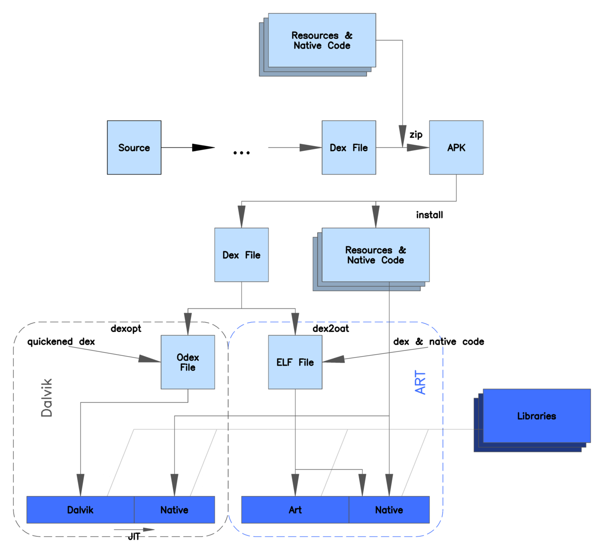

Android ART
Java compile process:
Actually the compiler itself works as a native executable (hence javac.exe). And true, it transforms source file into bytecode. The bytecode is platform independent, because it's targeted at Java Virtual Machine. Then the jvm which is platform dependent translates it into machine code.
Android run time key features:
ART introduces ahead-of-time (AOT) compilation, which can improve app performance. ART also has tighter install-time verification than Dalvik.
Improved garbage collection: 1. One GC pause instead of two 2. Parallelized processing during the remaining GC pause 3. Collector with lower total GC time for the special case of cleaning up recently-allocated, short-lived objects
4. Improved garbage collection ergonomics, making concurrent garbage collections more timely, which makes GC_FOR_ALLOC events extremely rare in typical use cases 5. Compacting GC to reduce background memory usage and fragmentation
From: https://www.quora.com/Why-is-ART-better-than-Dalvik
http://www.anandtech.com/show/8231/a-closer-look-at-android-runtime-art-in-android-l
Basics
The code we write can not be understood by computer(or CPU to be accurate). It can understand only machine language(binary codes). So to make it run on CPU, the code must be converted to machine code, which is done by a translator. This part I think every CS student knows.
The first gen translators were Assemblers, who directly translate assembly codes to machine codes. Since the translation was direct without any intermediate steps, it was fast. The next gen was compilers, which translates the code into assembly codes and then use assemblers to tranlate the code into binary. The compilation was slower than assembly translation for obvious reasons, but the execution of the program were almost as fast as assembly code. C and C++ compilers are from this generation. The problem with this approach was the code was not cross platform, means the code which runs or one machine, may or may not run on other machine.
Then the next gen was interpreters, which translates the code while executing it. Which means it reads a line converts into a binary command and executes it and then go to the next line. Since the translation happens at runtime, the execution was slow.
Java
Java is different in this case. To maintain cross platformness, it makes a virtual machine (JVM) which is specific to every platform. The Java compiler converts the .Java files into .class files(or archives classes into .jar), which is called byte code. This byte code is given to the JVM which converts it into machine code. Since the byte code for a java file is same on any machine, the cross platformness was achieved(Java's slogan was "code once, run anywhere" at that time, although it's not exactly true. For ex. consider 32 bit and 64 bit byte codes).
Although it was faster than interpretation, but slower than true c++ compilation. That's why C++ is always faster than Java in most of the cases.
Android
Android uses similar approach, it converts the java files into byte code and put it into apk file. Dalvik VM works similarly and uses JIT compilation. JIT compilation is available on most of the recent devices. Rest all devices which doesn't have any JIT compilers, were even slower. If you say that you can always use C++ code on Android using NDK, then I'd say it uses JNI, which is even slower, so the performance is almost similar, even slower in some cases (Google forbids NDK usage, unless required. It says that using NDK will not gain any performance for you).
Other platforms
Now if you compare it to other platforms, iOS apps are always faster than android apps, because they use compiled native codes in ipa files(.a and .o files). They can because all of their devices follow same architecture. Android can't because every android device have different architecture.
ART
ART aka Android RunTime, uses different approach. At the time of installation of apk file, ART compiles the apk into machine code which can be run directly by the device(with the help of ART). Although the compilation takes some time, thus the installation duration will increase, which is negligible, unless you're installing a pretty big apk. Now since the compilation is already done, the apk will work as fast as Native C++ code.
Dalvik VM is ditched in this case.
Now since the compilation will be done on device, it'll be acc. to the architecture of the device(ART would be device specific, thus it'll be acc. to the architecture of the device).
Google was working on it for almost two years and they did include it in Nexus 5. It seems pretty mature and feels fast. It's definitely going to get included in all future devices. I'd say that it'd be the biggest ever change in Android OS history, if they ditched DVM completely and put ART in charge. Probably in next version (4.5 or may be 5.0, since the change will be too radical)
ART architecture

Unlike Dalvik, ART introduces the use of ahead-of-time (AOT) compilation by compiling entire applications into native machine code upon their installation. By eliminating Dalvik's interpretation and trace-based JIT compilation, ART improves the overall execution efficiency and reduces power consumption, which results in improved battery autonomy on mobile devices. At the same time, ART brings faster execution of applications, improved memory allocation and garbage collection (GC) mechanisms, new applications debugging features, and more accurate high-level profiling of applications.[1][4][5]
To maintain backward compatibility, ART uses the same input bytecode as Dalvik, supplied through standard .dex files as part of APK files, while the .odex files are replaced with Executable and Linkable Format (ELF) executables. Once an application is compiled by using ART's on-device dex2oat utility, it is run solely from the compiled ELF executable; as a result, ART eliminates various application execution overheads associated with Dalvik's interpretation and trace-based JIT compilation. As a downside, ART requires additional time for the compilation when an application is installed, and applications take up slightly larger amounts of secondary storage (which is usually flash memory) to store the compiled code.[1][4][5]
Profile-guided JIT/AOT Compilation
In Android 7.0, we've added a Just in Time (JIT) compiler with code profiling to ART, which lets it constantly improve the performance of Android apps as they run. The JIT compiler complements ART's current Ahead of Time (AOT) compiler and helps improve runtime performance, save storage space, and speed up app updates and system updates.
Profile-guided compilation lets ART manage the AOT/JIT compilation for each app according to its actual usage, as well as conditions on the device. For example, ART maintains a profile of each app's hot methods and can precompile and cache those methods for best performance. It leaves other parts of the app uncompiled until they are actually used.
Besides improving performance for key parts of the app, profile-guided compilation helps reduce an app's overall RAM footprint, including associated binaries. This feature is especially important on low-memory devices.
ART manages profile-guided compilation in a way that minimizes impact on the device battery. It does precompilation only when then the device is idle and charging, saving time and battery by doing that work in advance.
One of the most tangible benefits of ART's JIT compiler is the speed of app installs and system updates. Even large apps that required several minutes to optimize and install in Android 6.0 can now install in just a matter of seconds. System updates are also faster, since there's no more optimizing step.